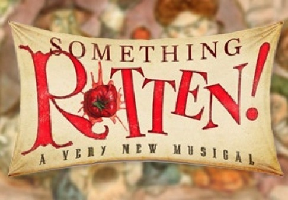

Canal Winchester Performing Arts Collective
Building a Community of Life-Long Artists
HS Spring Musical - Something Rotten!
------------------------------------------------------------------------------------
There’s Something Rotten in the state of Canal Winchester.
We’d like to thank everyone for their support in our performance of Something Rotten! Join us next year for our annual Fall Shorts, Nov 18 and 19.
Contact the director at: aphillips@cwls.us
